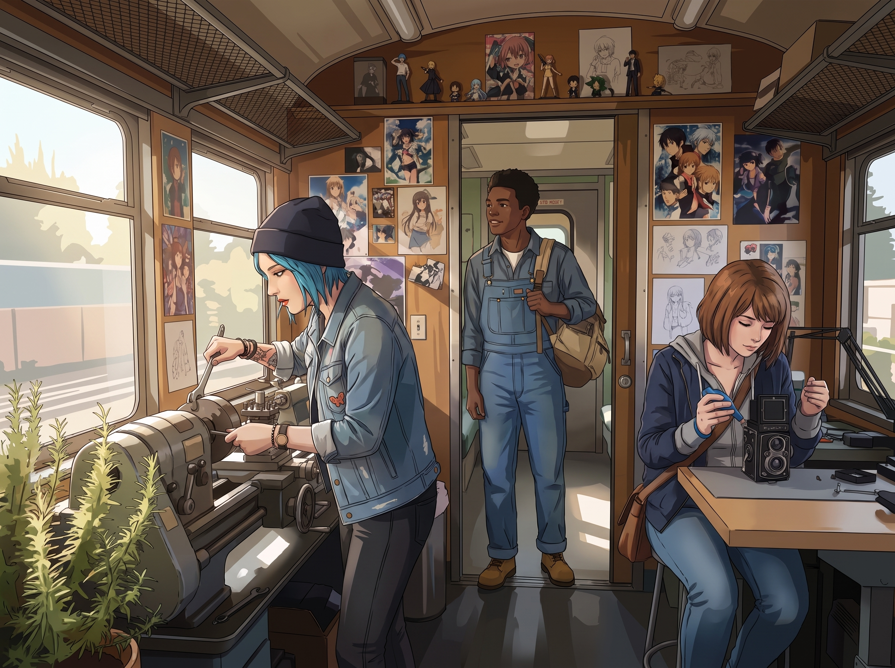

青年機械教室

週一上午八點五十分，波特蘭東區的舊鐵道花園剛迎來晨光。
Miles 穿著刷洗得乾乾淨淨的舊工裝褲與防砸靴，背著裝有素描本的雙肩包，提早十分鐘站在二號車廂門口。
推開滑門，撲面而來的是直立迷迭香的草本清香與冷軋鋼金屬的微冷氣息。車廂內，Chloe 嘴裡叼著草莓味棒棒糖，正用扳手擰緊金屬車床的三爪卡盤；Max 則在一旁的精密長桌上，用吹氣球清理著一台老式雙反相機的取景毛玻璃。
一、 實訓第一課：車床、安全規範與八卦試探
「喲，新人準時到了。」Chloe 將扳手往工具牆的掛鉤上一插，發出清脆的「咔嗒」聲。她反戴著棒球帽，長腿一邁跳下台階，打量著略顯拘謹的 Miles，「我是 Chloe Price，你的重型機械導師。記住第一條鐵律：進了這節車廂，長袖束緊、護目鏡焊死在臉上，要是被卡盤捲進去，連上帝都救不了你。」
Max 摘下黑框眼鏡，走上前遞給 Miles 一副全新的 3M 防塵護目鏡與防割手套，露出溫和的笑意：「別被她嚇到了，Miles。我是 Max Caulfield，負責光學修復與暗房版畫。今天我們先從認識金屬車床的基本構造開始。」
在接下來的兩小時裡，兩人的教學配合出奇默契：
- 基礎操作： Chloe 手把手教 Miles 如何用游標卡尺對準黃銅圓棒的中心線，並控制進刀手輪的微調刻度；
- 藝術結合： Max 則教他觀察不同金屬切削時的紋理走向，如何利用車削產生的同心圓反光，做出如同版畫般細膩的金屬浮雕質感。
Miles 本就擁有極高的空間感知天賦，上手極快，不到半天就獨立車出了一個邊緣光滑、帶有同心幾何凹槽的黃銅防塵蓋。
二、 休息時間的極限試探：Chloe 的「特工雷達」全面啟動
中午休息時，Kate 送來了一大盤剛烤好的火腿起司三明治與冰鎮檸檬茶。
三人坐在橡木工作台邊吃午餐，Chloe 的「八卦之魂」終於按捺不住了。她一手抓著三明治，手肘搭在 Miles 肩膀上，壓低嗓子、眼神閃爍著極度的好奇：
「喂，Miles。老實交代，那位帶你來報名的 McCall 先生到底是什麼來頭？老娘自認看過不少硬茬——阿卡迪亞灣退役的陸戰隊狂人我都天天見，但你那位大叔……他進門看手錶和掃描房間的角度，簡直就像能在五秒鐘內把全場所有人放倒一樣！」
Miles 咬著三明治的手猛地一頓，眼神下意識地有些閃躲，乾咳了一聲：「呃……McCall 先生只是個……開 Lyft 網約車的司機，平時很喜歡在社區讀平裝小說。」
「哈！省省吧，小子！」Chloe 翻了個大白眼，用吸管指著他，「網約車司機能讓街頭那些橫行霸道的小混混乖乖閉嘴？能單手把你從那些危險泥潭裡拎出來？快說說，他是不是有什麼隱藏身份？比如中央情報局退役殺手？暗夜清道夫？或者在西雅圖徒手拆過黑幫基地？」
三、 爆料現場：從「驚天事蹟」到「生活智慧」的邊緣拉扯
Miles 被 Chloe 逼問得滿臉通紅。他想起 Robert 曾經交代過「低調做人」的叮囑，但面對 Chloe 毫無惡意的瘋狂腦補與 Max 在一旁豎起耳朵的專注神情，他忍不住在「保密協議」的邊緣瘋狂試探：
- 差點說漏嘴的「義警傳說」：
「他……他確實不是普通司機。」Miles 撓了撓頭，聲音壓得極低，「之前我差點被街頭那群賣藥的傢伙拉下水，是 McCall 先生突然出現在他們的老巢……我甚至沒看清他怎麼動的手，幾秒鐘之內，那群拿著槍的傢伙就全躺在地上慘叫了。他只拿了一把普通的小水果刀，連呼吸都沒亂。」
- 火車硬幣與油漆刷的故事：
Miles 眼神漸漸變得敬重，「還有一次，社區裡一個老奶奶被詐騙了所有積蓄，丟了一張極其珍貴的家族老油畫。幾天後，那幅畫就完好無損地出現在老奶奶門口，而那個詐騙犯據說自己主動去警局自首了……他真的就像一個隨時在幫普通人找回公道的幽靈。」
「靠！！老娘就知道！！」Chloe 興奮地一巴掌拍在橡木桌上，整個人差點跳起來，「拿水果刀團滅武裝分子！這簡直比好萊塢動作片還要帥上一百倍！考菲爾德長官，聽見沒？！咱們工坊現在背後站著一位神級特工義警！！」
Max 扶著被震得差點掉下去的茶杯，無奈又震驚地看著 Miles：「……所以他那天說的『難以用普通法律流程解決的麻煩』，不是某種修辭手法，是真的物理意義上的解決？」
Miles 縮了縮脖子，有些後悔地小聲哀求：「Chloe 姐、Max 姐，你們千萬別告訴 Chase 女士……McCall 先生最討厭別人把他當成暴力分子，他說過，暴力只是最底層的手段，最重要的是『在混亂的世界裡，做出正確的選擇』。」
四、 精神共鳴與新壁畫的約定
聽到「做出正確的選擇」這句話時，原本興奮大叫的 Chloe 慢慢安靜了下來。
她靠回椅背上，轉頭看著身邊的 Max。在阿卡迪亞灣的那些歲月裡，她們也曾在無數次混亂與風暴中尋找什麼才是「正確的選擇」。
「放心吧，小子。」Chloe 咧嘴一笑，把最後一塊三明治塞進嘴裡，順手揉亂了 Miles 的頭髮，「老娘嘴巴嚴得很，絕對不向 Victoria 那個大喇叭打小報告。不過作為交換——」
Chloe 抓起一盒彩色粉筆，一把推開二號車廂朝向花園的那扇巨大外牆鐵門：
「下午車床實訓結束後，外牆這片二十米長、長滿鐵鏽的鋼板就歸你了！用你手裡的噴漆和炭筆，把你們那位『清道夫大叔』教給你的信念、還有我們這間工坊的重生故事，全都畫上去！」
Miles 看著眼前巨大的空白畫布，又看了看身邊信任他的兩個女孩，用力點了點頭，眼底滿是前所未有的自信與光芒。
窗外，波特蘭東區的微風穿過鐵道花園，而在這座庇護著創傷與新生的車廂裡，新的傳奇正伴隨著飛濺的火花與畫筆的重墨，悄然生長。